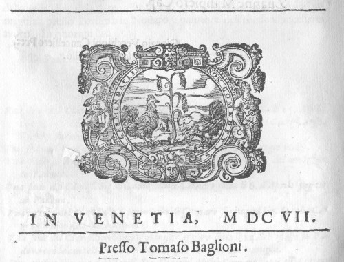
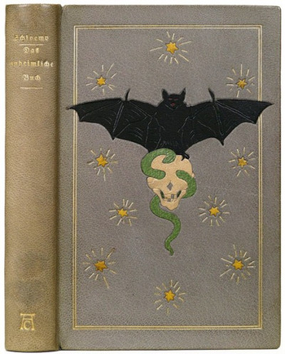
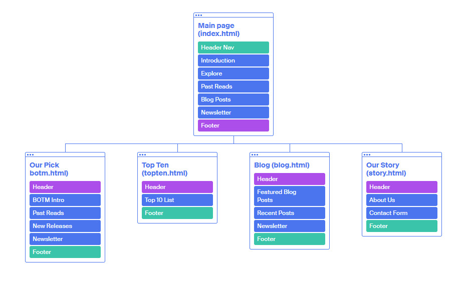

My website is Horror Book Club website. The website is for people interested in horror literature and being part of a reading community. I absolutely love books and especially horror books and, therefore, knew that I could speak from a place of intricate knowledge and design accordingly. This website has five different sections: The Main Page, A Book of The Month page, a Top Ten Page, a Blog Page and an About Us Page. They all follow the same basic structure with the body blocks being used for different purposes at different times (Articles, Blog Posts, Sliders, Contact Forms, etc).
I have chosen to use a simple structure that is basically a fixed nav bar, a line drawing image header, a body with three columns max (but usually two) that you can horizontally scroll and a footer. Every page follows a similar structure, but the elements in the body are slightly different. My aim was to make a visually appealing, but functional website that focus on the content and readability. I have also personally written all textual content that is present on the website. Except for two quotes, so I believe I have been able to give it the personal touch of a true horror fan.
I have looked at literary websites such as Visit W3Schools Lithub, Poetry Foundation, The New Yorker and The Paris Review , for inspiration of what sort of design and structure is used in book review/articles websites so that I had a professional standard to start from. From these I had the overall idea for the font-families (in my case Arbutus Slab, Roboto Slab, Imprima and Montserrat and colour scheme for the basic textual elements (in this case, black & grey).
I was inspired by the old-fashioned line drawings that I found on pixabay.com and used as a design element throughout the website. I purposely chose horror /book adjacent drawings such as skulls, snakes, memento mori, bats, organs, crows, etc. And overall, I wanted to implement a old cloth bound edition aesthetic, when the frontispiece and colophon page always used to have line drawings such as:
I chose to use earthy and dark tones that matched this antique book aesthetic as opposed to the straight red on black and white aesthetic we see on a lot of horror covers, posters, illustrations, etc. In this way the website has a more folk horror feel and I am combining the aesthetics of a literary article news website with horror imagery and colours (red, black and grey are still used). I avoided using bright colours that pop and went for a classic horror look, more muted and sepia (more Victorian gothic than Stephen King). Here is one cloth bound cover that inspired me:
Below are three examples of the criteria for accessibility that I met. According to WCAG accessibility Gudeline
Guideline 1.1 – Text Alternatives
1.1.1 Non-text Content - Level A
All of my images have an alt tag description explaining exactly what is pictured. All book covers, for example, have an alt tag explaining that they are the book cover of Title by Author. All pictures and illustrations are fully described. My website could be easily accessed by people with visual impairment as the site could be fully enjoyed without the images as seeing them is not essential to the content and they are decorative.
Guideline 3.2 – Predictable
3.2.3 Consistent Navigation - Level AA
My content has a clear structure and hierarchy, and all pages can be accessed from the same space on every page. The top navbar is fixed and it lists all pages of the website in the same order every time and can be accessed from anywhere on the website. When the page is resized the drop-down menu serves the same function.
Guideline 3.1 – Readable
3.1.1 Language of Page - Level A
All html pages have the appropriate language attributes, and the default language of the webpage can be easily ascertained to be english.
I have implemented a responsive design with the use of Bootstrap. The website works on the most common resolutions from a widescreen desktop to a small smartphone. Tis means the users can easily access the website from their preferred devices. It also loads quickly.
I have made sure the design is both aesthetically pleasing easy to navigate, uncluttered and that the site is aesthetically pleasing, using only a selected number of font-families and colours.
I have paid attention to readability, using enough white space and appropriate font sizes. I have almost made sure that the contrast between foreground and background is readable on all sections, they have all passed a contrast checker. In this way no user will have to struggle to read and their eyes will not be assaulted.
I had to learn how to use Bootstrap by reading the documentation and then applying it practically on the pages. There are a lot of video tutorials and other articles out there, but I found the documentation to be pretty clear and sufficient of all occasions. As the task required a separate CSS style sheet I combined the use of inbuilt categories on bootstrap and my own custom styles on the stylesheet to achieve the final look.
I implemented a javascript image carousel, Slick. I also had to read their documentation to use the slide to the effect that I intended. It was pretty intuitive once I understood the basics. Bootstrap also has an inbuilt carousel which I also used for the Past Reads section, but I found that less responsive and more of a hassle to deal with, so I decided to test slick and much preferred that.
Before choosing Bootstrap I looked at different methods of making a website responsive, so I learned a lot about CSS flexbox and was going to implement it, but then I thought we HAD to use a CSS library for the project (due to a comment by a tutor on the forums) so I scrapped that. But before I got to Bootstrap I explored different advantages and disadvantages of templates such as Bulma, Tailwind and Foundation. Bootstrap was the one that was the most supported, so I opted for that. I understand that some people have the opinion that all bootstrap websites end up looking the same, but I believe I managed to achieve a unique look with my website.
I am quite pleased with my design, I believe I managed to achieve exactly what I envisioned and at the end could make everything that I wanted to work, i.e. structure, size, look, etc. I believe that the final project looks very professional and if I really had a horror book club, I would definitely use it. I believe the HTML is well structured and I am happy with the content that I produced for the website, it fits thematically well and looks like a “real” website.
I, unfortunately, did not do as much with the JavaScript as I wanted to do, I ran out of time. I got too caught up in trying to learn about and find out about different uses of JavaScript on a website and different plugins and although the tutorials on Coursera explained the basics, there was much more that could have been there (It said to refer to Intro to programming, but ITP focuses on p5.js and visual use of JavaScript, I did not want to use any js graphics on my website as they didn’t fit the theme). In any case, this is the weakest part of my website as I feel like I could have added much more if only I had more time, but I believe that the ones that I did implement serve a purpose and add to the user experience on the website.
Quotes Used
Libraries, Plugins and External Resources
Built with Bootstrap. Refered to the Bootstrap Documentation
Used Slick and jQuery Javascript libraries
Used Imprima, Arbutus Slab, Roboto Slab and Montserrat Google Fonts and Madjoe by 160 studio, free for commercial use.
All social media icons form Icon Finder, free with a Creative Commons licence.
Used Asterisk from Font Awesome
Arrow Icon by Lyolya from Flaticon, free for personal use.
Blog Post Photographs
All photos are from Unsplash (free for commercial and non-commercial purposes, no permission/attribution needed) and a Grayscale filter was applied to them.
Line Drawings
All line drawings used for the layout/navigation are free for commercial use and no attribution required from Pixabay - User GDJ.
Book Covers
All book covers were taken from storefronts (such as Amazon), the publisher’s pages (such as Penguin) and review sites (such as Book Marks) and have not been edited. The copyright belongs to the respective publishers and are used under educational purposes/fair use.
Site Map
I used Octopus to draw the site map
Wireframes (opens in new tab)
Mockups(open in new tab)